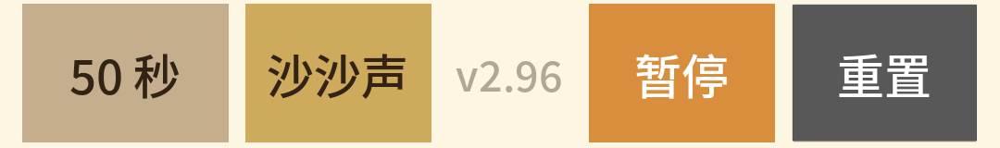

4.1 玻璃轮廓：外面有壁，里面有空间
看左侧球壁的截面关系。 从外到内依次是暖色背景、深色轮廓和玻璃内部。运行时，上球内还有沙体贴着内壁，这些边界必须能分辨。
形状要求
- 两个球保留圆形，不因窗口变化被拉成椭圆。
- 玻璃壁的粗细视觉上连续，球面到细颈是圆滑过渡。
- 沙体贴合内壁，不在边缘留下月牙缝，也不盖到外轮廓上。
不能只看这个局部
改球半径或描边时，还要看球顶、球底和细颈连接处。这里看起来均匀，不代表其他位置也没有硬折角。

沙漏是一个以沙子流动呈现计时进度的 Android 应用。进入应用就是计时界面：上方选沙色，中间显示倒计时和沙漏，下方调整周期、音效，并控制开始、暂停和重置。
当前外观以本页的安卓截图为准。 两个上下排列的圆形玻璃球、圆滑细颈、颗粒沙体和下落沙流构成主体。历史 PC 图、旧版本对照和候选方案只供追溯，不能直接当作当前界面。
文档区分两种依据：截图可见描述已有画面；代码已有、截图未覆盖描述当前实现，但不表示已做运行验收。设计要求也不等于测试通过。
这批截图来自已安装的 APK 容器内同步源码后的应用：界面源码版本为 2.96，已安装 APK 的包版本为 2.94。它们不是“新构建 2.96 APK 已验收”的证据。本次仅整理文件、阅读截图和代码，没有重新启动应用或执行测试。


另存有暂停后约 2 秒的截图。两张暂停图显示相同进度；这几个静态画面不能单独证明完整动画、音频控制或所有时间轴都正确。
先看信息，再看沙漏，最后操作。四个区域各有职责，不把按钮或数字叠进沙漏主体。截图最上方的黑色状态栏属于 Android，不是应用自己的标题栏。

选色用色块、文字和选中标记共同表达；倒计时是当前剩余时间与总时长的比较。两者不能抢占彼此的空间，也不能为了把沙漏做大而裁掉数字。
上下两个圆球沿同一中轴排列，细颈连接它们。沙漏占据主要高度，玻璃外轮廓不碰到底栏。结构与材质的细节见下一节的整体标注图和局部图。

周期和音效按钮显示当前值；版本区是长按设置的入口，不是普通按钮。开始为绿色，运行后改成橙色“暂停”，重置保持灰色。窄屏仍要保留版本号和四个按钮，不能把最右侧操作推出屏幕。
截图中的背景是浅暖色，玻璃内腔是浅蓝灰，轮廓是较深的灰绿色；沙体保留颗粒明暗。色彩用于明确区分沙子、玻璃和操作状态，不额外添加装饰图案。
色条仅表示六种选项，精确像素颜色以原始截图和代码中的 SAND_PRESETS 为准。当前截图只展示金沙实际沙体，其余五种尚未在这批截图中展开。
代码已有、截图未覆盖：倒计时根据总时长切换秒数、分:秒、时:分:秒；中文字体使用 ui/fonts/NotoSansSC-Medium.otf。布局采用 dp/sp 和内容测量，不把截图坐标直接写成其他设备的固定位置。
从整体到局部，分清“容器的形状”“沙子的质感”和“运动的衔接”。下面的配图全部取自已有安卓截图；只有总览图增加了编号框，细节图没有重绘或补造内容。

圆球和细颈属于同一个连续容器，内壁决定沙子可以出现在哪里。
沙面的位置表达进度；沙体内部的明暗表达颗粒，不是一块平色。
沙子沿玻璃内腔收拢，出口与下落段自然连接。
细长沙流保留颗粒和空隙，不能读成固定的实体管。
沙流落在可见沙堆上，周围的小颗粒给落地过程增加层次。
看左侧球壁的截面关系。 从外到内依次是暖色背景、深色轮廓和玻璃内部。运行时，上球内还有沙体贴着内壁，这些边界必须能分辨。
改球半径或描边时，还要看球顶、球底和细颈连接处。这里看起来均匀，不代表其他位置也没有硬折角。
初始与运行的区别先体现在沙面。 初始沙子接近球顶；运行截图中，顶部露出浅色内腔，沙面成为能辨认的分界线。
这三个层次要共同存在。强化颗粒不能让整体脏成噪点；压平起伏、抹掉纹理也不能算作性能优化。
这里的“层次”是画面的阅读方式，不是对代码绘制顺序的描述。


这里是储沙区和下落区的交界。 上球的轮廓向中间收窄，形成短直颈，然后向下球展开。金色沙子在内腔中延续到出口。
换周期会影响颈部几何，因此改这里时要同时检查短周期、长周期和不同尺寸，不能只看当前 50 秒这一档。

看柱内的细碎明暗与透出的内腔颜色。 截图里沙流近乎竖直，主体连续，但内部不是均匀铺满的平色。
纹理与粒子应有一致的流动感，不出现固定在屏幕上的图案或两层速度。单张截图只能看形态，不能证明速度和连续性；这些仍需要录像。

落地处不只有一个三角形沙堆。 从上往下先是沙流，接着是堆顶和颗粒明暗；堆顶两侧有细小飞溅，底部贴合玻璃内壁。
目前这张图只展示早期的小沙堆。中段和末段堆面抬高以后，落点是否仍贴合，需要另外检查。

暂停属于状态变化，不是另一种沙体材质。玻璃、沙流、沙堆和飞溅一起淡化；顶部选色和底栏仍保留原色，按钮变回绿色“开始”。

两图不是同一时刻，不能用于逐像素等价判断；这里只说明状态的视觉差别。完整状态图见第 2 节。恢复后是否保留进度和停止期间的音频行为，仍需单独验证。
画面表达的是计时进度，不是逐粒沙子驱动的真实物理计时。沙体高度、在途沙和粒子动画必须协调，但粒子不能反过来决定计时快慢。
性能优化不能牺牲外观。 不减少沙粒密度、不简化玻璃轮廓、不删掉肉眼可见的层次来换帧率。优化优先关注 1% low 和最慢帧，并保留改前、改后的相同条件对照。
这批画面只覆盖 50 秒周期的开局附近，不证明中段、末段和长周期的衔接已经正确。旧版本的空横缝、断裂等记录在 history/plan.html，不能仅凭开局截图宣布修复。
依据：初始截图。
依据：运行截图。
依据：暂停截图。再次开始从旧进度恢复属于代码行为，尚未取恢复截图。
代码已有、截图未覆盖：点击沙漏球体也可开始/暂停；长按底栏版本区约 3 秒打开“沙漏设置”。它们与底部按钮共用状态控制，不能各自维护一套进度。
改周期与普通暂停不同：确认一个新周期会重置当前进度；取消周期弹窗不应应用临时选择。重置应停止背景音、完成音，并清除本局粒子和待触发提醒。
计时完成：按钮恢复“开始”，提醒按周期门槛决定；再次开始新一局，旧提醒不能跟进新局。
性能测试：主操作可以显示“取消”；取消和结束后恢复原设置与运行状态。这两种流程目前只有代码说明，没有本批截图证据。
以下内容来自当前代码，尚无这批安卓弹窗截图。 不沿用旧 PC 弹窗图充当新版实拍，也不写成“已验收”。
入口：底栏周期按钮。先选基础时间，再通过快捷倍数或滑杆调整总时长。
入口：底栏音效按钮。选项是沙沙声、水流声、风声、钟表声和无声音。点选后切换音效，弹窗继续保留供连续选择，通过“确定”退出。
入口：长按版本。设置项按“浓度 → 颗粒 → 起伏 → 性能测试”排列：沙子浓度用滑杆，沙体颗粒和沙面起伏各有 A-F 六档。
调整后应显示效果并保存配置；不重新加入已撤掉的“沙流断续”假开关或不存在的玻璃反光滑杆。性能测试包含运行、结果、复制报告和取消；取消不是成功，报告版本与应用版本一致。
总周期至少 1800 秒时允许弹出，完成后约 1 秒触发；用时文案省略为零的时分单位。重置或重开使旧提示失效。门槛只控制弹窗，不等于短周期没有完成音。
当前代码为计时设置和沙漏设置提供了“内容过高时中段滚动、底部确认区保留”的分支。是否在目标尺寸下装得下，仍需要实际安卓截图和点击确认，不能只凭代码存在判断。
截图只能证明按钮上写着“沙沙声”，不能证明已经听到声音。实际验收需要确认开始、暂停、恢复、重置、切换音效和完成提醒的音频输出。
代码位置：main.py 中的 HourglassWidget、HourglassApp、_SoundProxy。音频在 sounds/，播报词块在 sounds/voice/；Android 配置在应用私有数据目录。
所有 design/ 下的目录和文件名使用英文；正文和页面标题继续使用中文。设计、历史、配图、检查规则各放一处，不混成一个大目录。
design/
README.md
pages/
hourglass.html
history/
plan.html
... 历史对照页，英文文件名保留版本号
images/
mumu-2.96-20261013/ 本页使用的原始安卓截图
... 历史配图
checks/
index.html 检查资料入口
rules/ 按部位分组的图文用例与机器清单
records/ 按版本保存原图、日志、覆盖与未测项
notes/ 版本变化、历史判据和不能再犯的错
old-assets/
presplash.png
| 位置 | 职责 |
|---|---|
| main.py | 应用启动入口、主界面、沙漏协调、交互和音频控制。 |
| src/app/app_version.py | 统一的 APP_VERSION，APK、Benchmark 和报告不能各写一个版本。 |
| src/app/frame_benchmark.py | 内置性能采样、统计和状态恢复。 |
src/app/ | 应用运行模块，包括物理、沙体材质、沙流和飞溅绘制；不是可以随意删除的测试输出。 |
| src/tools/ | 构建、检查和诊断工具，不进入 APK；输出一般放在 _temp/。 |
ui/ 与 sounds/ | 字体、图标、滑杆素材和实际播放音频。 |
| docs/file-index.md | 文件用途索引，新增、删除、移动时同步更新。 |
本页正式使用的截图已从临时输出复制到 design/images/。清理临时目录不应破坏设计文档中的图。整份 design 是开发资料，不进入 APK。
本页记录外观和行为；实际用例见 按部位分组的 33 个图文用例， 自动检查范围以 checklist.json 和 检查说明 为准。 每轮结果单独放入 版本记录。下表列出尤其容易被遗漏的关联项。
| 改动位置 | 同时检查 |
|---|---|
| 选色、字体、倒计时或底栏 | 六种沙色、选中标记、版本长度、长时间格式、窄屏底栏、暂停遮罩范围、弹窗可见性及资源打包。 |
| 玻璃、颈部或周期 | 上下球贴壁、长周期内孔、转屏和尺寸变化、沙柱不越界、下球接触面、重置和末段。 |
| 颗粒、沙体材质或批处理 | 上球、颈部、下落段、下球、飞溅、开局/中段/末段，以及所有配色档位；默认绘制和回退绘制均不能遗漏。 |
| 计时、暂停、重置或完成提醒 | 短长周期、暂停后恢复、在途沙收尾、音频启停、旧弹窗作废、Benchmark 取消与恢复。 |
| 文件改名、目录迁移或构建配置 | HTML 图片和相对链接、规则清单读取、文档索引、APK 资源包含与开发目录排除；改名不应改变原检查要求。 |
不在用户本机桌面启动 PC 测试。PC 自动检查交给 CI；安卓运行验证须在用户明确要求后，使用指定 MuMu 实例，不连接真机。截图不等于听音，模拟器性能也不能冒充真机高刷结论。
这些是后续验证范围，不是本次已经执行的任务。新增安卓截图时，把版本、周期、时刻、配色和状态一并记录，再更新对应章节；没有证据的部分继续明确标注。